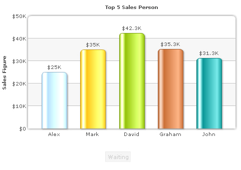
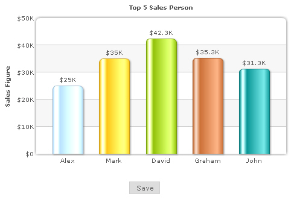
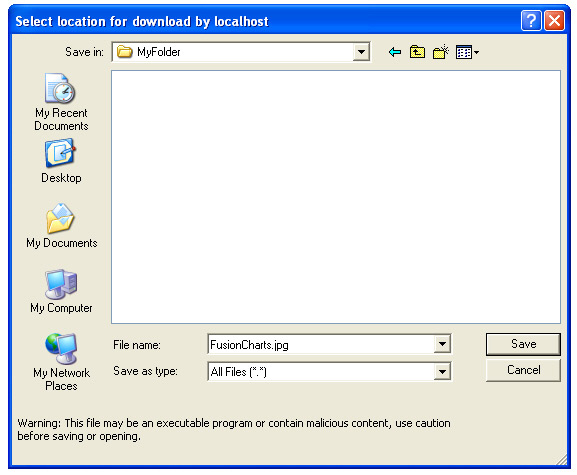
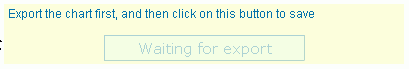
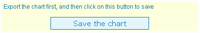

| Simple Example |
Here, we will cover examples for setting up Client-side exporting of charts. We will first start with the simplest example and then move ahead by configuring various parameters. Before you start, you need to follow these steps:
With that done, our next few steps are:
To aid your understanding of this section, we will recommend you to go through the Overview page of Exporting Charts as PDF or Images > Client-side export Let us see how to implement each of them in details. |
| Creating instance of Export Component in your web page |
The instance of the export component can be created in your web page easily using our FusionChartsExportComponent JavaScript class. So, you first need to include the JavaScript class in your page as under. Make sure to include this page after FusionCharts.js, as this class references some of the objects defined in FusionCharts.js. This order of inclusion is important. |
<head> <script language="JavaScript" src="../../FusionCharts/FusionCharts.js"></script> <script language="JavaScript" src="../../FusionCharts/FusionChartsExportComponent.js"></script> </head> |
Now, using this class, you need to create an instance of this component in your page. For that, you first define an empty DIV and name it, as shown under: |
<!-- We also create a DIV to contain the FusionCharts client-side exporter component --> <div id="fcexpDiv" align="center">FusionCharts Export Handler Component</div> |
As you can see above, the DIV has been named as fcexpDiv. Note that you can place this DIV anywhere in your page - it is not necessary to place it beside the chart. However, since the UI of this Export Component shows a button for initiating export, it is better to place it somewhere near the chart so that your users can recognize it. Finally, you create an instance of the export component in your page using the following JavaScript code: |
<script type="text/javascript">
//Note: fcExporter1 is the DOM ID of the DIV and should be specified as value of exportHandler
//attribute of chart XML.
var myExportComponent = new FusionChartsExportObject("fcExporter1", "../../FusionCharts/FCExporter.swf");
//Render the exporter SWF in our DIV fcexpDiv
myExportComponent.Render("fcexpDiv");
</script> |
Here:
While there are more parameters that you can provide in this constructor to customize the cosmetics and functional behavior of export component, we will come to them later. The final code of the page looks as under: |
<html>
<head>
<script language="JavaScript" src="../../FusionCharts/FusionCharts.js"></script>
<script language="JavaScript" src="../../FusionCharts/FusionChartsExportComponent.js"></script>
</head>
<body bgcolor="#ffffff">
<div id="chartdiv" align="center">The chart will appear within this DIV. This text will be replaced by the chart.</div>
<script type="text/javascript">
//Create the chart.
//Note that you necessarily need to set the registerWithJS attribute as 1, as JavaScript is used for client-
//side communication between the chart and FusionCharts Exporter Component.
var myChart = new FusionCharts("../../FusionCharts/Column2D.swf", "myChartId", "500", "300", "0", "1");
myChart.setXMLUrl("SimpleExample.xml");
myChart.render("chartdiv");
</script>
<!-- We also create a DIV to contain the FusionCharts client-side exporter component -->
<div id="fcexpDiv" align="center">FusionCharts Export Handler Component</div>
<script type="text/javascript">
//Render the export component in this
//Note: fcExporter1 is the DOM ID of the DIV and should be specified as value of exportHandler
//attribute of chart XML.
var myExportComponent = new FusionChartsExportObject("fcExporter1", "../../FusionCharts/FCExporter.swf");
//Render the exporter SWF in our DIV fcexpDiv
myExportComponent.Render("fcexpDiv");
</script>
</body>
</html> |
| This completes the code needed in your HTML. Now, we just need to configure our chart XML data to use this export component. |
| Configuring XML for Client-side Export |
In the XML, you need to do three things:
The following XML snippet shows how to attain these: |
<chart yAxisName='Sales Figure' caption='Top 5 Sales Person' numberPrefix='$' useRoundEdges='1' bgColor='FFFFFF,FFFFFF' showBorder='0' exportEnabled='1' exportAtClient='1' exportHandler='fcExporter1'> <set label='Alex' value='25000' /> <set label='Mark' value='35000' /> <set label='David' value='42300' /> <set label='Graham' value='35300' /> <set label='John' value='31300' /> </chart> |
| When you now fire up your HTML page, you will see a screen as under. |
|  |
| See it live! |
The screen consists of a chart and a small Waiting button below it. This button is the UI of FusionCharts export component. By default, it is enabled as the chart has not yet exported its data to Export Component. The Export Component can have UI in two modes - Compact or Full. What you see here is the compact mode with just the button on. We will cover customization of this mode and full mode in the coming sections. To start exporting, right click on the chart and select "Save as JPEG". You will see the chart entering capture phase. Once capture phase is finished, the chart passes this data to export component, which in turn processes it and makes it available for download. In this state, the title of button changes to "Save" and it gets enabled, as shown below. |
|  |
| When you click this button now, the browser shows a "Save as" dialog box, which allows you to save the exported chart output on your hard drive. |
|  |
As you can see above, the chart downloads as "FusionCharts.jpg". If you wish to change the name of file, you can specify it in your XML as: <chart ... exportFileName='MyFileName' ...> Note that you do not have to provide the extension here, as the extension depends on the format that was selected on chart during export. Now, if you are wondering why the Export Component needs to be a separate SWF file and why does it need to have a UI, let us understand the same. |
| FusionCharts Export Component - Why a separate UI? |
FusionCharts XT is made in Flash 8 (AS2) which does not support byte-streams and file downloads. However, Flash 10 (AS3) does support the same. So, to get the best of both worlds, the Export Component has been coded in Flash 10 (AS3) to be able to handle image/PDF building (using byte streams) and to allow download of the same. The bridge between FusionCharts XT charts and the Export Component is JavaScript. So, we always ask you to set registerWithJS of chart as 1, and to run the files from a server (either localhost, or a remote server), as Flash Player, by default, blocks JavaScript communication when running from local file system. Now if you are wondering why we cannot start automatic download of image/PDF from Export Component, rather than having to click a button, let us explain. In Flash Player, to allow download of a file, the end user has to necessarily interact with the Flash movie that initiates download. This has been done to avoid "evil" movies on web from doing any sort of harm. As such, the Export Component provides a button to click on, which initiates the download. As we earlier mentioned, the Export Component has two modes - Compact and Full Mode. The Full mode has a much enhanced UI, wherein you can select format for each chart, or download all charts as a single file. We will cover them later in Batch Export section. Before that, let us quickly glance through customization options for the compact mode. |
| Customizing the Export Component UI |
| The Export Component offers extensive UI customization options. Here, we'll see some of the basic configuration options. The entire list can be found in the section Component UI Customization. Consider the code below: |
<!-- We also create a DIV to contain the FusionCharts client-side exporter component -->
<div id="fcexpDiv" align="center">FusionCharts Export Handler Component</div>
<script type="text/javascript">
//Render the export component in this
//Note: fcExporter1 is the DOM ID of the DIV and should be specified as value of exportHandler
//attribute of chart XML.
var myExportComponent = new FusionChartsExportObject("fcExporter1", "../../FusionCharts/FCExporter.swf");
//Customize the component properties
//Width and height
myExportComponent.componentAttributes.width = '400';
myExportComponent.componentAttributes.height = '60';
//Background color
myExportComponent.componentAttributes.bgColor = 'ffffdd';
//Border properties
myExportComponent.componentAttributes.borderThickness = '2';
myExportComponent.componentAttributes.borderColor = '0372AB';
//Font properties
myExportComponent.componentAttributes.fontFace = 'Arial';
myExportComponent.componentAttributes.fontColor = '0372AB';
myExportComponent.componentAttributes.fontSize = '12';
//Message - caption of export component
myExportComponent.componentAttributes.showMessage = '1';
myExportComponent.componentAttributes.message = 'Export the chart first, and then click on this button to save';
//Button visual configuration
myExportComponent.componentAttributes.btnWidth = '200';
myExportComponent.componentAttributes.btnHeight= '25';
myExportComponent.componentAttributes.btnColor = 'E1f5ff';
myExportComponent.componentAttributes.btnBorderColor = '0372AB';
//Button font properties
myExportComponent.componentAttributes.btnFontFace = 'Verdana';
myExportComponent.componentAttributes.btnFontColor = '0372AB';
myExportComponent.componentAttributes.btnFontSize = '15';
//Title of button
myExportComponent.componentAttributes.btnsavetitle = 'Save the chart'
myExportComponent.componentAttributes.btndisabledtitle = 'Waiting for export';
//Render the exporter SWF in our DIV fcexpDiv
myExportComponent.Render("fcexpDiv");
</script> |
As you can see above, we have specified various parameters for export component. This is done in the following syntax: Component_Instance.componentAttributes.Parameter_name = 'Value'; We have changed background colors, button colors, font properties, added a caption to UI and changed the title of button (both disabled stated and active state). When you now see your page, you will get something as under. |
|  |
| In disabled mode (when export has not been initiated) |
|  |
| In active mode (post export).
See it live! The full mode has more complex UI and allows lot more configuration options. Please see the page Component UI Customization to get the complete list. Before that, let us quickly see what to do when you have multiple charts on the page. |